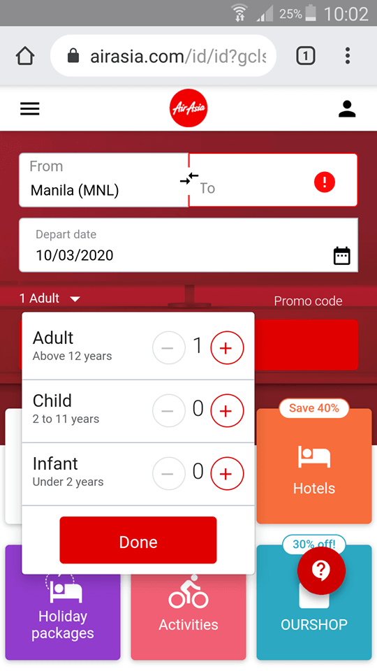
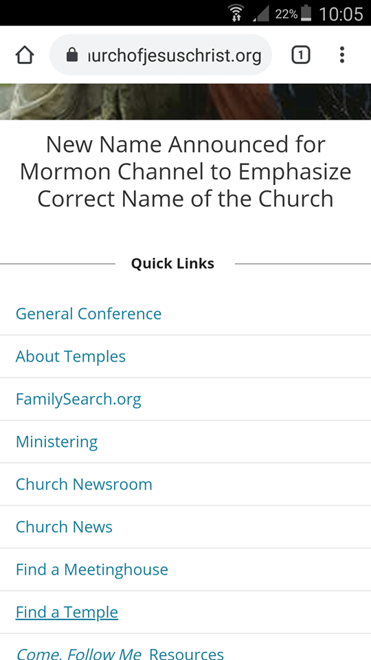

White spaces and clean design
Apple Inc.

The white spaces are clearly seen around the image and to the headings. It emphasizes clarity and simplicity in the page; giving a powerful meaning to the user of which make them think the elegant and beauty of the apple products.
Fits law
AirAsia airlines
The dropdown menu is observed when clicking the Adult button, this to make sure the user reduces the distance from one point to the next and make the target object large enough to enable prompt detection and selection of interactive elements without sacrificing accuracy.
Alignment
The church of Jesus Christ of latter-day saints
The text under quick links has horizontal alignment specifically flush left or left-justified. It defines organization in the website and enhance the user experience. It also create relationships between the elements in the page.